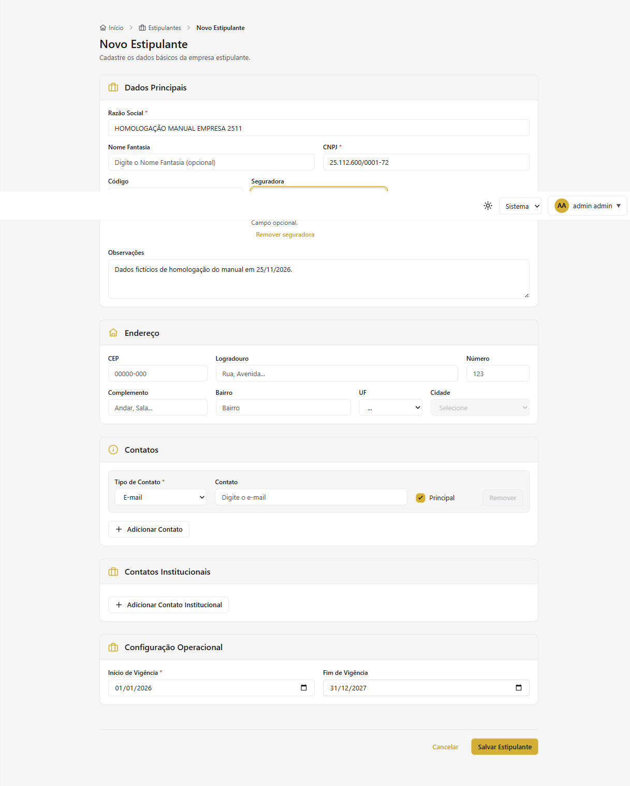
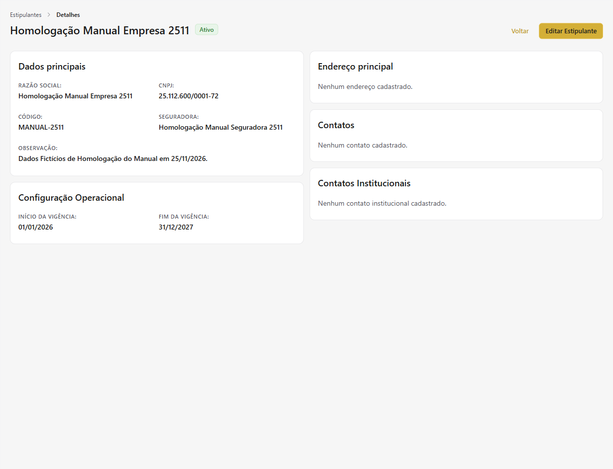
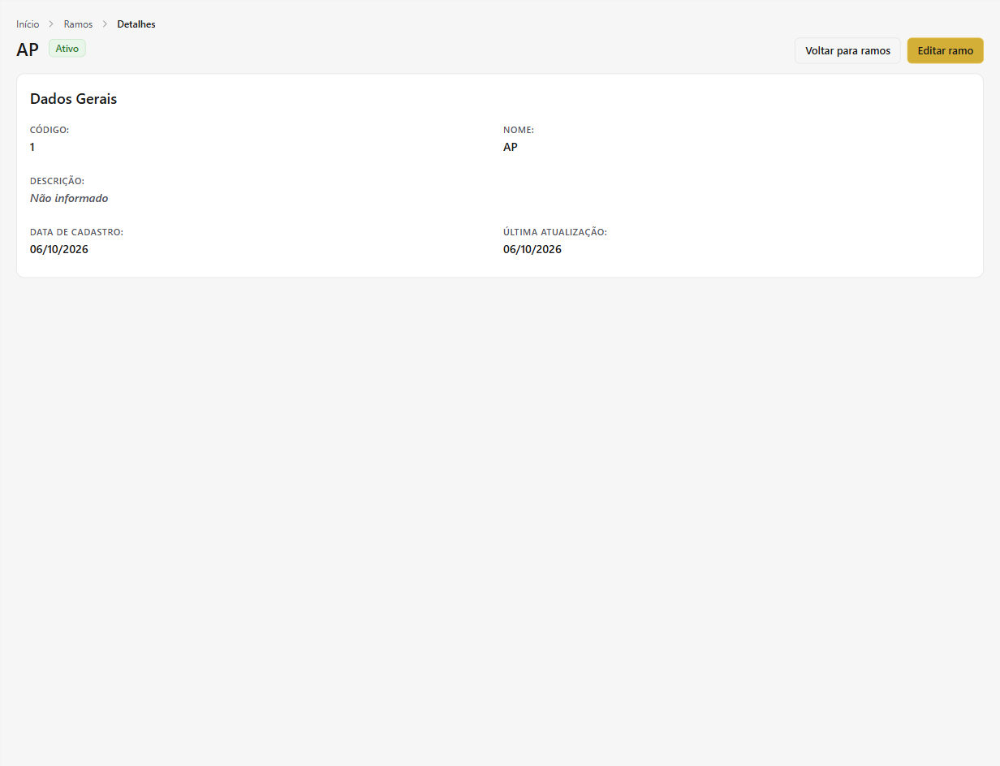

Busca em todos os capítulos, inclusive sem acentos. Funciona offline.
Comece aqui
Manual do Usuário — WebApolice
Versão 0.1 — 25/11/2026. Primeira edição para revisão.
O WebApolice organiza cadastros, Apólices, participações de Clientes, Propostas e o acompanhamento de parcelas. Este manual explica como essas informações se relacionam e como executar as rotinas disponíveis.
Para consultar com menu e busca, abra o manual no navegador. Os capítulos abaixo também podem ser lidos diretamente no repositório.
Os caminhos como Operação → Clientes representam opções do menu. Os nomes em negrito identificam campos, ações ou informações importantes. Os passos numerados indicam a sequência de uma tarefa; a explicação do resultado permite conferir se ela terminou como esperado.
Leia primeiro os conceitos se estiver começando a operar seguros no sistema. Se já conhece a rotina, use a tabela acima ou a busca da versão de navegador. Links ao longo dos capítulos levam às tarefas relacionadas.
As opções que você vê dependem do seu acesso. Poder consultar um registro não significa poder alterá-lo ou executar todas as suas ações. Mensagens de impedimento precisam ser resolvidas no contexto indicado; não repita uma gravação para tentar ignorá-las.
Alcance Desta Edição
Esta edição foi elaborada a partir da implementação e da documentação funcional do projeto. A conferência visual com login foi iniciada e ainda está em andamento. As primeiras capturas reais e instruções conferidas estão no capítulo de Cadastros. As demais rotinas continuam em revisão antes da aprovação final. Esta versão não contém capturas de tela simuladas.
O financeiro atual possui baixa integral e geração manual dos lotes mensais. Pagamento parcial, estorno de baixa, emissão de boletos e integração bancária não fazem parte das rotinas descritas. Consulte os limites financeiros.
O endereço do sistema e os canais de atendimento são definidos pela sua organização. Use o endereço informado pelo responsável, sem substituir pelo endereço local de desenvolvimento.
Responsabilidade pela Revisão
Quem opera cada área deve conferir as instruções com seu perfil de acesso e comunicar diferenças entre o manual e a tela. Ao relatar uma diferença, informe capítulo, tarefa, mensagem exibida e resultado esperado. Não inclua senhas ou dados pessoais desnecessários.
O controle editorial, as referências técnicas e a geração da versão de navegador ficam no guia de manutenção.
Tenha o endereço do sistema e uma conta disponibilizada pelo responsável da sua organização.
Abra o endereço do WebApolice no navegador.
Na autenticação apresentada, informe suas credenciais.
Conclua as etapas de autenticação solicitadas para a sua conta.
Ao entrar, confira a página Início e as opções disponíveis no menu.
Se o acesso for recusado, confira o usuário e procure o administrador. Não crie outro cadastro para contornar uma conta bloqueada. A administração de usuários é tratada no capítulo de Segurança.
Encontrar uma Área
Grupo do menu
Para que serve
Início
Acessar seus atalhos pessoais
Operação
Trabalhar com Clientes, Apólices e Propostas
Parceiros e Estrutura
Manter Seguradoras, Corretoras, Estipulantes, Subestipulantes e Cooperados
Configurações do Seguro
Manter Ramos, Coberturas, Módulos Globais e Convênios de Cobrança
Segurança
Administrar Usuários e Perfis e consultar o Catálogo de Permissões e a Auditoria
Sistema
Administração de Módulos do Sistema e acesso ao Design System quando disponibilizado
Use o menu para mudar de área e as abas para mudar de assunto dentro de um registro. Por exemplo, Operação → Apólices → abrir uma Apólice → Vidas leva às participações daquela Apólice, sem trocar de cadastro.
Uma opção ausente pode estar relacionada ao seu perfil ou à disponibilidade da funcionalidade. Confira com o responsável pelo acesso antes de concluir que o recurso não existe.
Personalizar Meus Atalhos
Abra Início.
Escolha Personalizar atalhos.
Marque as telas que deseja acessar com mais frequência.
Escolha Salvar atalhos.
Os cartões seguem a ordem do menu. Você pode salvar a seleção sem nenhuma tela. Cancelar, fechar a janela ou pressionar Escape antes de salvar descarta as alterações dessa seleção.
Resultado esperado: seus atalhos ficam associados à sua conta e podem ser usados em outros navegadores e computadores. Um atalho não concede permissão; uma tela sem acesso deixa de ser oferecida.
Localizar e Consultar um Registro
Abra a área desejada.
Use a busca e os filtros disponíveis na tela. O critério de busca varia por cadastro; leia a indicação do campo.
Confira a identificação do resultado antes de abrir ou editar.
Consulte outras páginas da lista quando necessário.
Use a ação de consulta ou detalhes disponível para o registro.
Em Propostas, a busca é pelo número. Na seleção de Vidas para uma nova pré proposta, a busca aceita nome ou documento; a matrícula aparece para identificação. Não presuma que todo campo de busca procura por todas as colunas exibidas.
Uma lista vazia pode significar ausência de registros para os filtros atuais. Revise os filtros e a página da consulta antes de cadastrar novamente.
Preencher e Salvar com Segurança
Confira se está no registro correto e se escolheu criar ou editar.
Preencha os campos obrigatórios sinalizados.
Revise seleções relacionadas, datas, documentos e valores.
Execute a ação de salvar e aguarde a conclusão.
Verifique a mensagem de resultado e, quando necessário, reabra o registro para conferir.
Mensagens junto aos campos apontam dados que precisam de correção. Em seletores, escolha uma opção da lista: digitar parte do nome pode apenas iniciar uma busca e não concluir a seleção.
O sistema padroniza nomes e outros textos de negócio, como JOÃO DA SILVA → João da Silva. Documentos, códigos, e-mails e senhas mantêm suas regras próprias. Essa padronização não substitui a conferência da grafia e dos dados.
Durante uma gravação, aguarde. Alguns comandos, saídas e fechamentos ficam bloqueados para impedir operações duplicadas. Se houver falha ou demora, consulte como conferir uma operação.
Entender as Mensagens da Tela
Mensagem ou situação
Como agir
Carregando
Aguarde a resposta antes de escolher outro comando dependente dos dados
Nenhum registro
Revise os filtros; crie um registro somente se ele realmente não existir
Campo inválido
Corrija o campo indicado e confira os demais dados antes de salvar
Tentar novamente
Repita a consulta depois de conferir a conexão
Sem permissão ou acesso negado
Solicite ao responsável a avaliação do acesso necessário
Dados alterados ou conferência desatualizada
Recarregue, confira as mudanças e refaça a comparação ou conferência
Operação concluída
Confira o resultado no registro ou histórico correspondente
Usar em Diferentes Telas
O sistema possui temas claro, escuro e sistema. Use a preferência de aparência disponível no aplicativo para adequar a leitura. O modo sistema acompanha a preferência do dispositivo.
Em telas menores, abra o menu de navegação e observe a rolagem das listas e dos formulários. Você também pode usar Tab para percorrer controles, Shift + Tab para voltar e Enter para acionar o controle selecionado. Confira o foco antes de confirmar uma operação.
Para estudar o manual no navegador, use o menu lateral e a busca. Em telas pequenas, o botão Capítulos abre a navegação. A opção Imprimir / salvar PDF usa a impressão do próprio navegador; nenhuma informação do sistema é enviada por essa ação.
Cliente → vínculo com Estipulante e matrícula → Vida na Apólice → Pré Proposta → confirmação e vigência → parcelas.
Cada etapa tem uma finalidade. Cadastrar o Cliente não cria matrícula; cadastrar matrícula não inclui automaticamente o Cliente na Apólice; incluir uma Vida não confirma uma Proposta; criar a pré proposta não concede cobertura nem gera parcela.
Pessoas, Vínculos e Participações
Termo
Significado no sistema
Exemplo didático
Cliente
Cadastro da pessoa física ou jurídica, com seus dados, contatos e endereços
Ana Souza
Estipulante
Organização à qual uma matrícula do Cliente está vinculada e que participa da estrutura do seguro
Empresa Exemplo
Vínculo do Cliente
Relação entre Cliente, Estipulante e matrícula
Ana, Empresa Exemplo, matrícula 123
Matrícula
Identificação do vínculo no Estipulante
123
Apólice
Contexto que reúne a estrutura do seguro, suas configurações e participações
Apólice da Empresa Exemplo
Vida
Participação do Cliente e de sua matrícula em uma Apólice
Participação de Ana naquela Apólice
Subgrupo
Organização contextual dentro da Apólice
Grupo definido para uma unidade
Subestipulante
Cadastro de parceiro/estrutura que pode ser vinculado à Apólice
Unidade participante cadastrada
Cooperado
Cadastro próprio disponível em Parceiros e Estrutura
Registro utilizado pela organização
O mesmo Estipulante pode participar de mais de uma Apólice. Por isso, o nome do Estipulante sozinho não identifica onde uma matrícula está segurada. Confira a Apólice e a Vida.
Configurações do Seguro
Termo
O que representa
O que não confundir
Ramo
Classificação do seguro; participa das regras aplicáveis à Proposta e ao IOF
Número da Apólice é uma identificação própria, não o nome do Ramo
Cobertura
Cadastro compartilhado de uma cobertura e seus atributos
Prêmio do vínculo pertence ao Plano em que a Cobertura foi associada
Módulo Global
Cadastro reutilizável de Módulo
Não configura sozinho as condições de cada Apólice
Módulo da Apólice
Vínculo contextual do Módulo naquela Apólice
Pode ter configuração diferente de outro vínculo do mesmo Módulo
Plano do Módulo
Plano exclusivo do vínculo do Módulo na Apólice
Não é o Plano global histórico nem o Universo anterior
Prêmio
Valor informado para a contratação da cobertura, com valores de titular e cônjuge conforme o caso
Não é capital segurado nem pagamento já recebido
Convênio de Cobrança
Cadastro de informações do convênio e configurações de cobrança
Preencher dados bancários não executa integração ou liquidação bancária
Exemplo: a mesma Cobertura pode existir em dois Planos. Alterar seu nome no cadastro compartilhado muda a identificação apresentada nos vínculos. Alterar o prêmio no Plano A não muda o prêmio no Plano B.
Propostas e Datas
Termo
Como interpretar
Pré Proposta
Preparação ainda sem vigência; permite preencher e revisar as condições
Proposta nativa
Criada pelo fluxo atual do WebApolice
Registro legado
Informação oriunda do sistema anterior, mantida conforme as regras de preservação histórica
Nova versão
Nova tentativa ligada à anterior, com histórico preservado
Confirmação
Validação e registro das condições e da data de início
Agendada
Confirmada para início futuro; ainda depende da efetivação na data e das validações
Vigente
Versão com vigência operacional registrada; confira também seus períodos e eventuais impedimentos
Substituída
Versão cuja vigência foi encerrada pela efetivação de uma sucessora
Cancelamento agendado
Pedido para encerrar a vigência em data futura
Cancelada
Encerramento concluído; consulte se chegou a ter vigência ou se foi cancelada antes do início
Descartada
Pré proposta encerrada sem confirmação nem vigência
Reinclusão
Preparação de nova versão após cancelamento de uma proposta que teve vigência
Situação, vigência e datas devem ser lidas juntas. Uma Proposta confirmada pode estar agendada, vigente ou já substituída. A palavra “confirmada”, sozinha, não prova cobertura atual.
As operações de início e cancelamento consideram o calendário de São Paulo. A data do cancelamento de vigência é o primeiro dia sem cobertura. Exemplo: cancelamento em 20/08 significa ausência de cobertura a partir de 20/08; o sistema registra separadamente quando a ação foi executada.
Financeiro
Termo
Significado
Competência
Mês a que a mensalidade pertence
Vencimento
Data prevista para pagamento da parcela
Parcela
Registro individual do valor devido
Lote mensal
Conjunto de mensalidades elegíveis de uma Apólice para uma competência
Conferência
Apresentação dos dados para revisão antes da operação
Baixa integral
Registro de pagamento de todo o saldo da parcela
Saldo anterior
Débito ainda aberto de competências anteriores
Total acumulado
Mensalidade aberta da competência somada ao saldo anterior
Fechamento
Encerramento da conferência do mês para liberar a sequência mensal; pode manter parcelas abertas
IOF
Imposto considerado na formação do valor conforme o Ramo e a conferência
Fechado não significa pago. Uma competência fechada pode conter parcelas em aberto e receber baixas posteriores.
Nomes Parecidos que Exigem Atenção
Grupo e Subgrupo: Grupo foi retirado do cadastro de Estipulantes. Subgrupo da Apólice continua sendo uma configuração própria da estrutura da Apólice.
Encerrar e excluir Vida: encerrar mantém a participação como encerrada; excluir corrige uma participação indevida dentro das restrições do sistema.
Cancelar e descartar: cancelar trata o agendamento ou a vigência conforme a situação; descartar encerra uma pré proposta sem confirmação.
Retirar pedido e reincluir: retirar atua antes de efetivar o cancelamento; reincluir prepara nova versão após cancelamento com vigência.
Histórico e Auditoria: o histórico explica a evolução funcional; a Auditoria permite rastrear operações registradas conforme o acesso administrativo.
Pesquise o registro existente para evitar duplicidade. Confirme documento, nome e situação. Um registro inativo pode continuar necessário ao histórico; cadastrar outro com o mesmo significado não substitui a avaliação sobre editar ou reativar o existente.
Prepare os dados do cadastro e faça as seleções relacionadas. Campos obrigatórios e regras variam entre telas; siga os avisos apresentados. Nos formulários com várias seções, revise também os campos abaixo da área visível antes de salvar.
Cadastrar um Cliente
Onde: Operação → Clientes.
Escolha a ação para cadastrar um novo Cliente.
Informe Tipo de Pessoa, Documento (CPF/CNPJ) e Nome Completo / Razão Social.
Preencha os demais dados aplicáveis, como data de nascimento, sexo e RE quando exibido.
Em Contatos, informe o tipo e o contato; identifique o principal quando necessário.
Em Endereços, preencha os dados e selecione UF e cidade conforme as opções.
Revise Informações Adicionais e observações. Marque falecimento/extinção apenas quando corresponder à situação real e confira a data aplicável.
Salve e confira o cadastro.
Resultado esperado: Cliente disponível para consulta. A matrícula e a participação em seguro são etapas posteriores.
Para editar, localize o Cliente e use a ação de edição autorizada. Confira o documento e o nome antes de alterar informações pessoais; não use a edição para transformar uma pessoa em outra.
Criar ou Editar um Vínculo do Cliente
Onde: Operação → Clientes → detalhes do Cliente → Vínculos.
Confira o Cliente aberto.
Escolha adicionar um vínculo.
Selecione o Estipulante cadastrado. Percorra as páginas de opções se necessário.
Informe a matrícula e a situação oferecida no formulário.
Salve e confira o vínculo na lista.
Para alterar, abra a edição do vínculo existente. O sistema protege a identidade de vínculos já utilizados. Se houver bloqueio por histórico, não crie uma alteração artificial para contorná-lo; confira o uso em Apólices e Propostas com o responsável.
Resultado esperado: matrícula disponível no contexto cadastral. A identificação das Apólices aparece quando houver participação efetivamente associada em Vidas. Sem associação, siga a inclusão de Vida.
Consultar Propostas pela Matrícula
Nos detalhes do Cliente, encontre o vínculo correto.
Use Propostas na linha correspondente.
Confira Cliente, Estipulante e matrícula no contexto da janela.
Localize a proposta pela listagem ou pelo número.
Escolha explicitamente a versão desejada.
Um vínculo pode ter propostas de mais de uma Apólice e várias versões. A consulta não escolhe automaticamente uma proposta para você. As ações disponíveis no detalhe dependem das suas permissões e da situação daquela versão.
Seguradoras e Corretoras
Onde: Parceiros e Estrutura → Seguradoras ou Corretoras.
Consulte se a organização já está cadastrada.
Abra o cadastro novo ou a edição do registro correto.
Preencha Nome / Razão Social, CNPJ quando aplicável e Código Interno.
Em Seguradoras, confira Código SUSEP; em Corretoras, confira Código Protheus. Preencha a observação quando necessária.
Salve e revise o resultado.
Escolher uma Seguradora em outro formulário exige que ela esteja disponível na consulta correspondente. Se não aparecer, confira o cadastro, a situação e seu acesso à consulta.
Estipulantes
Onde: Parceiros e Estrutura → Estipulantes.
Pesquise por um registro existente e escolha cadastrar ou editar.
Revise Razão Social, Nome Fantasia, CNPJ, código e observações conforme aplicáveis.
No campo Seguradora, pesquise e selecione uma organização cadastrada quando houver vínculo a informar.
Preencha endereço, contatos e contatos institucionais necessários.
Em Configuração Operacional, informe Início de Vigência, que é obrigatório. Preencha Fim de Vigência quando aplicável.
Salve e abra os detalhes para conferir.
Seguradora é opcional. Para trocar, escolha outra opção e salve. Para desvincular, use Remover seguradora e salve. O vínculo pode ser mantido sem alteração quando você não tem acesso à pesquisa de Seguradoras.
O campo Grupo não faz parte do cadastro atual. Não é necessário preencher um substituto; eventuais vínculos antigos são preservados pelo sistema.

Cadastro de Estipulante com dados fictícios: identificação, Seguradora e vigência.

Detalhes do Estipulante fictício com o nome da Seguradora e as datas de vigência conferidas.
Subestipulantes e Cooperados
Onde: Parceiros e Estrutura → área correspondente.
Consulte o registro para evitar duplicidade.
Abra a ação de cadastro ou edição.
Informe os dados de identificação e as relações exigidas pelo formulário.
Confira a situação e salve.
O cadastro de um Subestipulante não equivale ao seu vínculo com uma Apólice. Faça a associação no contexto da Apólice quando a rotina exigir. Da mesma forma, não presuma que cadastrar um Cooperado cria automaticamente Cliente, Vida ou Proposta.
Cadastro
O que conferir no formulário
Subestipulante
Nome / Razão Social, CNPJ quando aplicável, Código Interno e Observações Internas
Cooperado — identificação
Tipo, Código, Nome, CPF, Data de Nascimento e Coordenador responsável quando aplicável
Cooperado — documentação
RG, Órgão Emissor, Data de Emissão e registros profissionais/fiscais apresentados
Cooperado — contato e endereço
Telefone, E-mail, CEP, logradouro, número, complemento, bairro, UF e cidade
Cooperado — operação
Número de Dependentes, Data de Inscrição e indicação de Cooperado Credenciado
Cooperado — banco
Banco, Agência e Conta Corrente, além das observações pertinentes
O número de dependentes do Cooperado é uma informação cadastral. Não deve ser interpretado como inclusão automática de beneficiários ou dependentes em uma Proposta.
Ramos
Onde: Configurações do Seguro → Ramos.
Para cadastrar, abra a inclusão, informe Código e Nome, preencha a Descrição quando necessária e salve. Para consultar um existente:
Consulte o Ramo desejado.
Use Visualizar para abrir seus detalhes.
Confira nome, situação, código quando apresentado, descrição e datas.
Se precisar corrigir e possuir acesso, use a edição disponível.
O Ramo participa da configuração do seguro e da conferência financeira. Mudanças cadastrais não recalculam automaticamente valores financeiros já confirmados.

Detalhes de um Ramo: identificação, situação e ações para voltar ou editar.
Coberturas
Onde: Configurações do Seguro → Coberturas.
Cadastre ou localize a Cobertura.
Revise nome, nome reduzido, classificação básica e reajuste, conforme exibidos.
Alterar os atributos da Cobertura afeta a identificação compartilhada nos vínculos. Os prêmios de titular e cônjuge pertencem à associação com o Plano e são mantidos separadamente.
Módulos Globais
Onde: Configurações do Seguro → Módulos Globais.
Consulte, cadastre ou edite o Módulo conforme sua autorização. Confira Nome do Módulo, Descrição e Status quando apresentado. Depois, faça o vínculo no contexto da Apólice e configure seu Plano e suas Coberturas. O cadastro global é uma referência reutilizável; sozinho não conclui a preparação da Apólice.
Convênios de Cobrança
Onde: Configurações do Seguro → Convênios de Cobrança.
O formulário reúne dados gerais e bancários, configurações de arquivos de remessa/retorno e dados do estabelecimento. Preencha somente informações validadas pelo responsável por esse cadastro e confira códigos, agência, conta e caminhos quando aplicáveis.
Limite: a existência desses campos não significa que a rotina atual emite boletos, transmite arquivos ou realiza liquidação bancária. As operações financeiras disponíveis estão no capítulo Financeiro.
Conferência Após Salvar
Confirme que o nome e o documento identificam a pessoa ou organização correta.
Reabra o registro e confira contatos, endereço e relações importantes.
Verifique se a situação permite o uso desejado na etapa seguinte.
Ao usar uma lista de seleção já aberta em outra tela, recarregue suas opções quando necessário.
Abra o registro e confira nome, identificação, situação e períodos.
Escolha a aba correspondente à tarefa.
Aba
Finalidade
Resumo
Conferir a identificação geral
Ramos
Consultar e manter os vínculos de Ramos e suas identificações na Apólice
Configurações
Conferir as configurações próprias da Apólice
Subgrupos
Organizar os Subgrupos do contexto
Módulos
Vincular Módulos e configurar Plano e Coberturas
Subestipulantes
Manter as associações correspondentes
Vidas
Consultar e manter as participações e acessar suas Propostas
Universo anterior
Consultar a estrutura histórica correspondente
Parcelas
Conferir competências, gerar lotes, registrar baixas e fechar o mês
Histórico
Consultar os eventos funcionais registrados
Antes de alterar uma configuração, confirme que está na Apólice correta. Cadastros parecidos podem existir em contextos diferentes.
Cadastrar ou Editar os Dados Gerais
Antes de começar: confira os cadastros de Estipulante e Seguradora e, quando aplicável, de Corretora.
Em Operação → Apólices, abra a ação de cadastro ou a edição da Apólice desejada.
Informe Nome (Denominação).
Selecione Estipulante e Seguradora.
Selecione Corretora (Opcional) quando fizer parte da operação.
Confira Início da Vigência, Fim da Vigência e Data de Aniversário conforme os campos e regras apresentados.
Preencha a observação quando necessária e salve.
Abra os detalhes e revise a identificação antes de manter os vínculos nas abas.
Resultado esperado: dados gerais da Apólice gravados. O número associado a um Ramo e a estrutura de Módulos, Plano, Coberturas e Vidas são conferidos em suas respectivas etapas.
Preparar a Estrutura
Para uma nova estrutura, revise os cadastros que serão utilizados: parceiros, Ramos, Coberturas e Módulos Globais. Na Apólice, confira os dados gerais e mantenha os vínculos aplicáveis pelas abas correspondentes.
Uma sequência útil é conferir Ramos e Configurações, organizar Subgrupos e Subestipulantes, configurar Módulos, Plano e Coberturas e, depois, incluir Vidas. A necessidade de cada vínculo depende da configuração da operação; não cadastre associações sem correspondência real apenas para preencher a estrutura.
Para alterar um vínculo, use a edição da própria linha ou registro. A situação do cadastro global e a situação do vínculo são controles diferentes; confira ambos quando uma seleção estiver indisponível.
Configurar Plano e Coberturas
Antes de começar: a Cobertura deve existir no cadastro compartilhado; a Apólice e o Módulo precisam permitir a alteração.
Na Apólice, abra Módulos.
Abra Plano e Coberturas do vínculo desejado ou edite o vínculo do Módulo.
Cadastre seu Plano, se ainda não existir. Cada vínculo do Módulo possui um único Plano.
Escolha Vincular Cobertura.
Selecione uma Cobertura existente.
Informe prêmio do titular e prêmio do cônjuge.
Confira a situação e escolha Salvar vínculo da Cobertura.
Repita para as demais Coberturas e revise a lista final.
Os dois prêmios são obrigatórios, não negativos e aceitam até duas casas decimais. Zero representa ausência de cobrança naquele campo. O sistema não herda automaticamente os valores de Planos globais ou do Universo anterior.
Ao cadastrar um novo vínculo de Módulo, Salvar vínculo e continuar permite seguir para Plano e Coberturas. Essas etapas são salvas separadamente: interromper depois de salvar o vínculo não desfaz o que já foi gravado.
Resultado esperado: Plano com as Coberturas e os prêmios corretos para aquele vínculo de Módulo naquela Apólice.
Alterar uma Cobertura do Plano
Localize a associação no Plano.
Use Editar vínculo.
Altere prêmios ou situação conforme necessário.
Salve e confira o resultado.
A identidade da Cobertura não é trocada dentro da mesma associação. Para usar outra, mantenha o histórico da anterior e faça a nova associação permitida.
Uma Cobertura já associada, mesmo inativa, não aparece como uma associação nova disponível. Edite ou reative o vínculo existente. Para reativá-lo, o cadastro da Cobertura também precisa estar ativo. Se a Cobertura acabou de ser cadastrada, use Atualizar Coberturas no seletor.
Alterar a configuração do Módulo não reescreve silenciosamente as condições das Propostas já criadas. Para uma Proposta elegível, utilize Revisar condições.
Incluir uma Vida
Antes de começar: tenha o Cliente cadastrado, seu vínculo com Estipulante e matrícula, e a estrutura de seguro aplicável preparada.
Abra a Apólice correta e entre em Vidas.
Escolha a ação de inclusão de participação.
Selecione o Cliente e o vínculo/matrícula correto conforme o formulário.
Confira Subgrupo, Módulo, situação e períodos aplicáveis.
Revise os dados e salve.
Reabra a participação e confira sua identificação.
Resultado esperado: participação disponível na Apólice. O relacionamento com a matrícula poderá aparecer também nos detalhes do Cliente. Ainda será necessário criar e confirmar uma Proposta para seguir o fluxo de contratação.
Uma Vida pode ter impedimentos que bloqueiam a criação ou confirmação de Proposta. Leia o motivo apresentado e confira o contexto em vez de criar outra participação para contornar a regra.
Abrir as Propostas de uma Vida
Em Vidas, localize a participação correta.
Abra a consulta de Propostas disponível para ela.
Confira Cliente, matrícula e Apólice.
Escolha a versão desejada ou inicie a criação permitida.
Uma Vida encerrada pode continuar permitindo a consulta de seu histórico de Propostas. Consultar não significa poder criar ou confirmar outra versão nesse contexto.
Encerrar ou Excluir uma Participação
Necessidade
Ação e efeito
Registrar o encerramento da participação
Encerrar mantém a Vida visível como encerrada
Corrigir uma participação incluída indevidamente
Excluir, quando permitido, retira a participação das consultas operacionais e preserva histórico e Auditoria
A exclusão exige confirmação e não é permitida se a Vida tiver qualquer Proposta, inclusive inativa ou excluída. Cliente e matrícula não são apagados por essa operação. A permissão de excluir é diferente da de encerrar ou alterar.
Antes de confirmar, confira a Apólice, o Cliente e a matrícula. Se houver Proposta ou outro uso protegido, mantenha o histórico e avalie a operação adequada com o responsável.
Exclusões na Estrutura da Apólice
Ramos, Subgrupos, Subestipulantes, Módulos e seus vínculos possuem proteções de uso e histórico. Leia o conteúdo da confirmação e os impedimentos apresentados. Não exclua registros relacionados para tentar liberar uma exclusão bloqueada sem avaliar a consequência funcional.
Encerrar participação, cancelar Proposta e inativar configuração são ações diferentes. Confira a finalidade da alteração antes de escolher.
Consultar o Universo Anterior e o Histórico
Use Universo anterior para compreender os dados históricos apresentados. A preparação de novas Propostas segue o contexto atual de Vida, Módulo, Plano e Coberturas; não reutilize identificações antigas como se fossem a estrutura atual.
Use Histórico para conferir eventos funcionais. Para acompanhar parcelas e pagamentos entre versões, consulte também o histórico financeiro.
As ações aparecem conforme situação, origem, elegibilidade e permissões. Algumas rotinas se aplicam somente a Propostas nativas. Um registro histórico pode permitir consulta sem oferecer os mesmos comandos.
Consultar uma Proposta
Você pode começar por Operação → Propostas, pelas Propostas de uma Vida ou pela ação Propostas de um vínculo nos detalhes do Cliente.
Localize o número desejado ou percorra a listagem no contexto escolhido.
Abra a Proposta.
Confira Cliente, matrícula, Apólice, número e versão.
Leia situação, indicador de vigência, datas e eventuais pendências.
Consulte condições, beneficiários, histórico e parcelas antes de executar alterações.
Ao abrir pela matrícula ou pela Vida, a consulta permanece naquele contexto. Confira a versão escolhida; não presuma que o primeiro resultado seja a única Proposta ou a versão vigente.
Criar a Primeira Pré Proposta
Antes de começar: a Vida deve estar elegível, com vínculo de Cliente e condições disponíveis. A primeira criação não é o caminho para uma Vida que já possui histórico de Propostas.
Abra Operação → Propostas.
Escolha Nova pré proposta.
Pesquise e selecione uma Apólice ativa.
Pesquise a Vida por nome ou documento e confira a matrícula.
Leia Cliente, Subgrupo, Módulo e os impedimentos apresentados.
Escolha uma Vida elegível.
Confira o contexto no diálogo e confirme a criação.
Resultado esperado: abertura da pré proposta criada para preenchimento. Ela começa sem vigência e sem parcela. Cancelar a seleção antes de confirmar retorna à consulta sem criar o registro.
Também é possível iniciar pelo contexto da Vida na Apólice. Se houver histórico anterior, use a operação oferecida no detalhe da Proposta, como nova versão ou reinclusão, conforme a situação.
Preencher a Pré Proposta
Abra a pré proposta correta.
Confira o contexto e as condições copiadas do Módulo.
Preencha ou revise os beneficiários e seus percentuais.
Confira os prêmios de Coberturas e a contratação de cônjuge quando aplicável.
Ao realizar ajustes de prêmio permitidos, informe a justificativa exigida.
Preencha a observação quando necessária.
Salve o preenchimento e confira o resultado.
Antes de confirmar: os beneficiários devem estar completos e somar 100%. Exemplo: dois beneficiários com 60% e 40% somam 100%; dois com 60% e 50% precisam de correção.
Dados de beneficiários e valores pertencem àquela Proposta. Corrigir um cadastro relacionado não significa que todas as condições registradas serão substituídas automaticamente.
Revisar Condições
Use esta rotina quando precisar comparar as condições registradas com outra configuração de Subgrupo/Módulo disponível na mesma Apólice. Ela é permitida na pré proposta e em confirmadas com início ainda futuro, antes da efetivação, quando a tela indicar elegibilidade.
No detalhe, escolha Revisar condições.
Selecione o Subgrupo e o Módulo de destino permitidos.
Escolha Comparar condições.
Examine mudanças de contexto, Plano, Coberturas incluídas, removidas e mantidas, atributos e prêmios.
Escolha explicitamente o tratamento dos ajustes: manter ajustes das correspondências permitidas ou usar os prêmios atuais do Módulo.
Confira o resultado proposto e informe a justificativa.
Use Aplicar condições comparadas.
Resultado esperado: condições da Proposta atualizadas com registro de histórico. A Vida e as versões anteriores permanecem preservadas. Os beneficiários são mantidos para nova conferência.
Manter ajustes vale para correspondências reconhecidas pelo sistema. Coberturas novas recebem seus valores atuais; nomes semelhantes não garantem correspondência. Abrir a revisão, comparar ou voltar não aplica a mudança.
Se os dados mudarem depois da comparação, faça uma nova comparação. Após mudanças que afetem valores ou início, refaça também a conferência financeira.
Conferir e Confirmar
Antes de começar: confira a identificação, o Plano do Módulo, ao menos uma Cobertura ativa, beneficiários completos e total de 100%, além das justificativas dos ajustes.
Abra a operação de confirmação/conferência disponível no detalhe.
Informe e confira Data de início da vigência, Competência inicial, Primeiro vencimento e Ramo para o IOF.
Escolha Conferir primeira parcela.
Revise prêmios, participação de cônjuge quando contratada, IOF e valor mensal.
Confira os efeitos da confirmação sobre a vigência e eventual versão anterior.
Escolha Confirmar proposta e valores somente quando os dados apresentados estiverem corretos.
Leia o resultado e confira situação, datas e histórico.
Data de início
Resultado esperado quando todas as regras são atendidas
Hoje ou retroativa válida
Efetivação na confirmação e substituição da anterior quando aplicável
Futura
Confirmação e agendamento; a anterior permanece vigente até a efetivação da nova
A data precisa respeitar os períodos e as regras do contexto. Data retroativa não significa permissão irrestrita para qualquer dia passado. Um agendamento futuro depende de processamento habilitado no ambiente.
A primeira parcela mensal integral é gerada na ativação quando existe plano financeiro nativo. Criar, salvar ou apenas agendar uma pré proposta não equivale a receber pagamento. Consulte a primeira parcela.
Preparar uma Nova Versão
Use a criação de nova versão oferecida no detalhe para uma Proposta elegível, em vez de tentar criar outra primeira Proposta pela lista geral.
Abra a versão de origem e confira a vigência.
Escolha a ação de nova versão disponível.
Revise o contexto apresentado e confirme a preparação.
Preencha, revise condições, confira valores e confirme a nova versão pelo fluxo normal.
Resultado esperado: nova preparação ligada à origem e histórico preservado. Preparar a nova versão não encerra a anterior. A troca ocorre na efetivação válida da sucessora, imediatamente ou na data agendada.
Se a substituição falhar na validação, a anterior não deve ser considerada substituída apenas porque a tentativa foi criada. Confira o resultado e o histórico.
Gerir o Agendamento de Início
Abra a Proposta confirmada para início futuro. Em Gerenciar agendamento, quando elegível, use Reagendar início ou Cancelar agendamento, com os dados e justificativas exigidos.
Para reagendar, informe a nova data, confira as validações e refaça a conferência financeira quando solicitada. Não trate o reagendamento como edição livre das condições.
Para cancelar antes do início, confira que está encerrando o agendamento correto. Essa operação não representa cancelamento de uma cobertura já vigente e não reativa versões anteriores.
Quando a data for alcançada, o processamento revalida a elegibilidade. Se houver pendência, leia o motivo, corrija a causa e utilize a nova tentativa oferecida quando cabível. A efetivação manual disponível não antecipa o início.
Cancelar a Vigência
Antes de começar: confirme que deseja encerrar a versão vigente. Se pretende alterar condições com continuidade, avalie a rotina de nova versão.
Abra a Proposta vigente correta.
Escolha a ação de cancelamento de vigência.
Informe a data e a justificativa exigidas.
Confira que a data representa o primeiro dia sem vigência.
Confirme e leia se o cancelamento foi efetivado ou agendado.
Para hoje ou data retroativa válida, o encerramento ocorre na operação. Para data futura, fica um pedido e a Proposta permanece vigente até o processamento. Podem existir impedimentos, como sucessora não encerrada; siga a mensagem apresentada.
O cancelamento preserva parcelas, pagamentos, condições e histórico. Não gera automaticamente devolução, crédito ou ajuste proporcional. Não considere uma solicitação futura como encerramento já concluído.
Alterar ou Retirar Pedido de Cancelamento
Enquanto o cancelamento ainda não foi efetivado, uma Proposta elegível permite gerir o pedido, inclusive quando a data já chegou e há pendência de processamento.
Alterar o pedido: informe uma nova data válida, diferente da anterior, e uma justificativa. Data de hoje ou retroativa válida pode efetivar o cancelamento na própria operação; futura mantém o pedido.
Retirar o pedido: confirme a retirada e informe a justificativa. O pedido ativo é removido e o histórico da solicitação é preservado; a Proposta permanece vigente.
Limite: essas ações não desfazem cancelamento já efetivado. Se o processamento concluir antes da sua gravação, recarregue o registro e confira a situação atual.
Reincluir Após Cancelamento
Use a reinclusão para uma Proposta nativa cancelada que chegou a ter vigência e que esteja elegível. Ela cria uma nova versão; não reabre a encerrada.
Abra a Proposta cancelada indicada como origem elegível.
Escolha a ação de reinclusão.
Selecione explicitamente as condições: configuração atual do Módulo ou condições registradas na encerrada.
Confira os valores e a escolha apresentada.
Conclua a preparação da nova pré proposta.
Revise beneficiários copiados, percentuais, condições e dados atuais.
Confira e confirme pelo fluxo normal, com data válida.
Ao escolher condições anteriores, os ajustes preservados continuam sujeitos às validações atuais. Ao escolher o Módulo, não presuma que os ajustes antigos serão transportados.
O novo início não pode anteceder o fim de vigência da encerrada. Um intervalo entre o cancelamento e o novo início continua sem cobertura. Preparar a reinclusão não concede vigência nem gera parcela por si só.
Descartar uma Pré Proposta
Abra a preparação ainda sem confirmação nem vigência.
Escolha a ação de descarte quando disponível.
Informe a justificativa e confira a identificação.
Confirme e consulte a situação e o histórico.
Resultado esperado: tentativa encerrada como descartada e preservada no histórico. Uma origem vigente, quando existente, não é encerrada pelo descarte da preparação.
Conferência Final de Qualquer Transição
Após confirmar, agendar, cancelar, substituir ou reincluir, confira a versão, as datas, o indicador de vigência e o evento no histórico. Em mudanças com impacto financeiro, confira também as parcelas. Se o retorno for de falha ou contexto alterado, recarregue antes de decidir a próxima ação.
A sequência mensal é conferir → gerar as mensalidades elegíveis → registrar os pagamentos recebidos → fechar a competência. Pagamentos de parcelas abertas também podem ser registrados depois do fechamento.
A primeira parcela tem origem na ativação da Proposta com plano financeiro nativo. As mensalidades seguintes são geradas manualmente por Apólice e competência. A mudança do mês no calendário não gera nem fecha lotes sozinha.
Conferir os Valores da Proposta
Onde: detalhe da Proposta → confirmação ou conferência financeira disponível.
Confira Data de início da vigência.
Informe Competência inicial e Primeiro vencimento.
Selecione Ramo para o IOF.
Escolha Conferir primeira parcela.
Revise a composição apresentada: prêmios, cônjuge quando contratado, IOF e total mensal.
Na confirmação inicial, use Confirmar proposta e valores somente após a revisão completa.
Para a conferência permitida de uma confirmada ainda não ativada, confira o resultado e use Salvar financeiro conferido, quando oferecido.
Os valores e a alíquota conferidos ficam registrados. Uma mudança posterior no cadastro do IOF não recalcula automaticamente o plano já confirmado. Mudanças de início ou condições antes da ativação podem exigir nova conferência.
Entender a Primeira Parcela
A primeira parcela é mensal e integral; não é proporcional à quantidade de dias de cobertura. Ela é gerada uma única vez na ativação quando há plano financeiro nativo, inclusive na efetivação de início agendado.
Exemplo didático: uma mensalidade conferida de R$ 100,00 gera uma parcela mensal integral de R$ 100,00, mesmo que a data válida de início não seja o primeiro dia do mês. Não faça um rateio manual esperando que o sistema o reconheça como regra de cobrança.
A geração mensal considera a parcela inicial para evitar repetir a mesma mensalidade. Em alterações de versão, consulte o histórico antes de concluir que deveria existir outra parcela na mesma competência.
Conferir uma Competência
Onde: Operação → Apólices → abrir a Apólice → Parcelas → Parcelas e lote mensal.
Confira a Apólice.
Informe Competência do lote.
Escolha Conferir competência.
Leia a situação: conferência anterior à geração, lote gerado ou competência fechada.
Revise todas as páginas de Vidas e as pendências apresentadas.
Examine os valores e os detalhes das parcelas antes de gerar, baixar ou fechar.
Informação
Como interpretar
Mensalidade da competência
Valor do mês analisado para a Vida, conforme sua elegibilidade
Saldo anterior
Parcelas antigas ainda abertas
Total acumulado
Mensalidade aberta do mês mais o saldo anterior
Impedimento ou motivo
Explicação de por que uma ação ou inclusão não está permitida
Se houver pendência, corrija a causa e confira novamente. Não mude a competência apenas para contornar um bloqueio da sequência mensal.
Gerar o Lote Mensal
Faça a conferência da competência.
Confira a elegibilidade das Vidas, os valores e a situação do mês anterior.
Quando a geração estiver liberada, escolha Confirmar geração do lote.
Aguarde a conclusão.
Confira as parcelas resultantes e a mensagem de sucesso.
Resultado esperado: criação somente das novas mensalidades elegíveis. Dívidas anteriores permanecem em suas parcelas originais; não são somadas ao valor da nova parcela.
Para liberar a competência seguinte, a anterior precisa estar gerada e fechada. Isso não exige que todas as parcelas tenham sido pagas.
Registrar uma Baixa Integral
Antes de começar: tenha a confirmação do recebimento integral e a data do pagamento. Confira Apólice, Vida, competência e parcela.
Na conferência do lote, abra os detalhes da Vida.
Localize a parcela pelo número, competência, vencimento, total e saldo aberto.
Informe a data do pagamento daquela parcela.
Confira novamente a identificação e a data.
Escolha Confirmar baixa integral da parcela correspondente.
Aguarde e verifique a data registrada e a atualização dos saldos.
Resultado esperado: pagamento integral registrado e saldo da parcela atualizado. A operação não transfere dinheiro e não executa liquidação bancária; registra no WebApolice um pagamento recebido e conferido.
Uma parcela antiga ainda aberta pode ser baixada depois que sua competência foi fechada. Não é necessário reabrir o mês. Confira se está baixando a parcela antiga correta, e não a mensalidade atual.
Atenção: não há pagamento parcial nem estorno de baixa nesta versão. Se o valor recebido for parcial, não registre como integral. Se uma baixa foi lançada indevidamente, comunique o responsável com a identificação da parcela para avaliação; não repita o lançamento nem altere o banco de dados.
Fechar a Competência
Consulte novamente a competência e confira se o lote foi gerado.
Revise as parcelas e os pagamentos registrados.
Identifique quais parcelas permanecerão abertas.
Quando o fechamento estiver liberado, escolha Confirmar fechamento, preservando abertas.
Confira a situação de competência fechada.
Resultado esperado: mês fechado para a sequência de geração. Os valores não pagos continuam devidos e podem receber baixa posteriormente.
Fechar a competência não comprova que todos pagaram. Ao informar a situação a outra pessoa, diferencie mês fechado de parcelas quitadas.
Entender Atrasados sem Duplicar Cobrança
Exemplo didático: janeiro possui R$ 100,00 em aberto. Fevereiro tem nova mensalidade de R$ 100,00. A conferência pode mostrar R$ 100,00 de saldo anterior e R$ 200,00 de total acumulado.
Existem duas parcelas de R$ 100,00; não foi criada uma parcela de fevereiro de R$ 200,00. Se janeiro for pago depois, registre a baixa de janeiro. O saldo anterior será atualizado sem duplicar o pagamento na mensalidade de fevereiro.
Entender Vencimentos e Novas Versões
O calendário preserva o dia de vencimento e o deslocamento de meses originalmente definidos. Se o dia não existe no mês, usa o último dia daquele mês e retoma o dia original nos seguintes. Exemplo: dia 31 usa o último dia de fevereiro e volta ao dia 31 em março.
Uma nova versão preserva a parcela já gerada e aplica as novas condições à próxima competência elegível ainda não gerada. Cancelamento preserva parcelas e pagamentos anteriores; a geração seguinte considera o período de cobertura. Essas transições não geram automaticamente crédito, devolução ou acerto de diferenças.
Consultar o Histórico Financeiro
Consulte as parcelas na Apólice e o histórico de parcelas disponível na Proposta. Confira competência, vencimento, valor, pagamento e identificação da versão quando apresentados.
O histórico acompanha os movimentos da família Apólice/Vida visível, inclusive entre versões, conforme as regras de consulta. Movimentos legados são preservados; não presuma que um registro antigo tenha o mesmo plano financeiro das Propostas nativas.
Limites da Versão Atual
Disponível
Fora do escopo atual
Conferência dos valores e IOF
Recálculo automático de todo o histórico por alteração cadastral
Primeira parcela na ativação com plano nativo
Proporcionalidade diária da mensalidade
Geração manual de lotes mensais
Geração e fechamento automáticos pelo calendário
Baixa integral por parcela
Pagamento parcial e fracionamento da baixa
Registro de pagamento com data
Estorno de baixa
Fechamento com parcelas abertas
Crédito ou devolução automática por cancelamento/substituição
Consulta de parcelas e histórico
Emissão de títulos/boletos, remessa/retorno e liquidação bancária
O responsável optou por manter esse alcance nesta versão. Campos de convênio e dados bancários não ampliam essas funcionalidades.
O login identifica a conta. Os Perfis e suas permissões definem as operações de negócio disponíveis. A disponibilidade de módulos e recursos também interfere no acesso.
Exemplo: alguém pode consultar Propostas sem poder alterá-las. Ter acesso a Clientes não concede automaticamente criação de Propostas. Um atalho pessoal também não acrescenta permissão.
Este capítulo se destina a usuários autorizados a administrar ou consultar essas áreas. Quando uma tela não estiver disponível, solicite ao responsável a avaliação do acesso necessário para a sua função.
Cadastrar um Usuário
Onde: Segurança → Usuários.
Confira se a conta já existe.
Abra a ação de cadastro.
Informe Username, Nome Completo e E-mail.
Preencha Senha Temporária e Confirmar Senha.
Confira o Status da conta.
Em Perfis de Acesso, selecione os Perfis adequados à função.
Escolha Cadastrar Usuário e confira o resultado.
Resultado esperado: usuário registrado conforme o retorno da operação. O nome de acesso deve ser conferido antes do cadastro: o campo Username não fica editável depois da criação.
Ao editar, revise os dados permitidos, a situação e os Perfis, e escolha Salvar Alterações. A senha temporária pertence à criação; não presuma que editar o usuário oferece o mesmo fluxo de redefinição de senha.
Manter Perfis de Acesso
Onde: Segurança → Perfis.
Localize o Perfil ou abra um novo cadastro.
Confira código, nome, descrição e situação.
Revise as permissões apresentadas e selecione as necessárias para a função.
Salve.
Confira os usuários associados conforme as consultas disponíveis e valide as operações necessárias com o perfil apropriado.
Antes de alterar um Perfil existente, considere que a mudança pode afetar várias contas. Use permissões compatíveis com a responsabilidade operacional; não conceda acesso total apenas para eliminar uma mensagem de bloqueio.
Consultar o Catálogo de Permissões
Onde: Segurança → Catálogo de Permissões.
Use a consulta para identificar os módulos, recursos e ações disponíveis no catálogo. O catálogo é uma referência de acesso; esta tela não deve ser tratada como edição livre de novas permissões.
Se uma ação está ausente, verifique tanto a permissão do Perfil quanto a disponibilidade do módulo e recurso correspondentes. Os controles de disponibilidade também se aplicam ao Acesso Total quando a regra do catálogo assim exige.
Consultar Auditoria
Onde: Segurança → Auditoria.
Abra a listagem.
Informe os filtros necessários: Ação, Entidade, Data Inicial e Data Final.
Escolha Filtrar.
Localize o evento e abra seus detalhes.
Confira autor, momento, operação e dados apresentados para aquele evento.
Use Limpar para remover os filtros e iniciar outra consulta.
Os códigos de ação e entidade devem corresponder ao que você procura. Uma lista vazia pode estar relacionada ao filtro escolhido. Use informações do evento ou orientação do responsável em vez de presumir um código.
Auditoria é evidência de operações. Ela não é uma ferramenta para editar ou desfazer registros. Para entender a sequência do negócio, consulte também o histórico funcional da Apólice ou Proposta.
Módulos do Sistema
Onde: Sistema → Módulos do Sistema, quando disponível ao operador autorizado.
A tela permite consultar e controlar a habilitação de módulos e recursos. Uma alteração pode interferir no acesso de vários usuários. Confira exatamente o módulo ou recurso antes de mudar sua disponibilidade e observe o resultado da operação.
Módulos do Sistema não são Módulos Globais do seguro. O primeiro trata da disponibilidade de funcionalidades; o segundo é um cadastro utilizado na configuração das Apólices.
Design System
O acesso em Sistema → Design System depende da autorização de operador e da configuração do ambiente. Ele apresenta referências dos componentes visuais e não é uma etapa para contratar seguro, gerar parcelas ou cadastrar Clientes.
Quando Encaminhar ao Administrador
Informe a tela e a operação necessárias, a mensagem recebida e o contexto mínimo para identificação. A ausência de um botão pode ser esperada para o seu Perfil; encaminhe a necessidade funcional, sem solicitar uma permissão técnica por tentativa.
Credenciais e senhas temporárias devem seguir o canal autorizado da organização. Não as inclua em registros de problema, imagens do manual ou evidências de Auditoria anexadas a chamados.
Confira se está na área, no registro e na versão corretos. A disponibilidade pode depender do Perfil, de permissões específicas, da situação do registro e da habilitação do módulo/recurso.
Se a ação for necessária ao seu trabalho, informe ao responsável o que precisa realizar e em qual contexto. Criar um atalho, trocar o endereço manualmente ou acessar outro registro não concede o acesso necessário.
Um Cadastro Não Aparece no Seletor
Confira se o cadastro existe e se a consulta exige situação ativa.
Verifique se você está selecionando no contexto correto, como a mesma Apólice.
Revise o texto de busca e percorra as páginas.
Atualize as opções quando a tela oferecer essa ação.
Confira se o registro já está associado, mesmo inativo.
No Plano do Módulo, uma Cobertura já vinculada não é oferecida como vínculo novo. Edite ou reative a associação existente conforme permitido.
Cadastrei o Cliente, mas Não Consigo Criar a Proposta
Confira as etapas separadamente: Cliente cadastrado, vínculo com Estipulante/matrícula, Vida na Apólice e condições de Módulo/Plano/Coberturas. Cadastrar o Cliente não conclui essas relações.
Na seleção de Vida, leia os impedimentos. Vida inativa, sem vínculo ou com histórico anterior não pode iniciar outra primeira proposta pelo mesmo fluxo. Para histórico existente, consulte nova versão ou reinclusão no detalhe da Proposta elegível.
A Proposta Não Confirma
Confira beneficiários completos e total de 100%, Plano e Coberturas exigidos, justificativas dos ajustes, datas válidas e conferência financeira atualizada. Leia também as mensagens de contexto e situação.
Se houve alteração de condições ou de início, refaça a conferência necessária. Se outra pessoa alterou o registro, recarregue antes de tentar novamente. Não crie uma Proposta duplicada para contornar a validação.
A Proposta Está Confirmada, mas Não Está Vigente
Leia a data de início e o indicador de agendamento. Início futuro permanece agendado até a data e a revalidação. Se a data já chegou, consulte a pendência e a ação de efetivação disponível.
Se o motivo indicar processamento desabilitado ou outra condição do ambiente, encaminhe ao responsável. Alterar o relógio do computador ou repetir confirmações não substitui o processamento.
Mudei o Módulo, mas a Proposta Continua com os Valores Anteriores
As condições da Proposta são registradas para preservar o histórico. Alterar a configuração do Módulo não as reescreve automaticamente. Quando elegível, utilize Revisar condições, compare e aplique conscientemente a mudança.
Se a Proposta já está vigente, confira a necessidade de uma nova versão. Não trate alterações cadastrais como substituição automática da contratação existente.
Quero Desfazer um Cancelamento
Confira se há apenas um pedido ou se o cancelamento já foi efetivado. Um pedido ainda não efetivado pode permitir retirada. Cancelamento concluído não é desfeito por essa ação.
Quando a cancelada teve vigência e está elegível, a reinclusão prepara uma nova versão, preservando a encerrada. Um eventual intervalo sem cobertura continua existindo.
Não Consigo Excluir uma Vida
A existência de qualquer Proposta, inclusive inativa ou excluída, impede a exclusão da participação. Também é necessário acesso específico para excluir.
Se deseja registrar o fim da participação, avalie a ação Encerrar. Ela tem finalidade diferente. Não descarte ou cancele Propostas apenas para tentar liberar uma exclusão histórica.
O Mês Está Fechado, mas Ainda Aparece Dívida
Isso é esperado quando há parcelas não pagas. O fechamento libera a sequência mensal, mas não quita débitos. Localize a parcela aberta e registre a baixa integral quando o recebimento for confirmado.
O Total Acumulado Parece Maior que a Mensalidade
Confira o saldo anterior. O total acumulado reúne a mensalidade aberta e débitos de meses anteriores. A nova parcela não deve ser interpretada como uma duplicação desses débitos. Consulte o exemplo de atrasados.
Recebi Apenas Parte do Valor ou Lancei uma Baixa Errada
A rotina atual aceita somente baixa integral e não oferece estorno de baixa. Não registre um pagamento parcial como integral. Para baixa incorreta, encaminhe o caso ao responsável com Apólice, competência e identificação da parcela. Não edite diretamente o banco nem lance outro pagamento para compensar.
Uma Operação Falhou ou Demorou
Aguarde o encerramento da tentativa em andamento.
Leia a mensagem apresentada e confira a conexão.
Antes de reenviar uma gravação com resultado incerto, consulte o registro e o histórico para verificar se ela foi concluída.
Se houver conflito ou dados alterados, recarregue e refaça a revisão/conferência necessária.
Se a falha persistir, registre o contexto e encaminhe ao responsável.
Consultar novamente é diferente de repetir uma geração, confirmação ou baixa. Confira o estado atual antes de decidir por um novo envio.
Como Relatar um Problema
Informe:
Área e caminho da tela.
Identificação mínima do registro e da versão, quando houver.
Passos realizados e resultado esperado.
Mensagem exibida, data e horário aproximados.
Se a operação aparece ou não no registro/histórico após a consulta.
Use dados fictícios para reproduções quando possível. Ao enviar imagem, preserve o contexto necessário e oculte dados pessoais que não ajudem a resolver o problema. Não envie senha, token ou credencial.
Ana Souza será incluída no seguro da Empresa Exemplo, com matrícula 123. A Apólice, os cadastros e as condições usados aqui são fictícios. O objetivo é explicar a sequência; não reproduza lançamentos fictícios em registros reais.
Cada etapa possui um ponto de conferência. Se ele não for atendido, resolva a causa antes de seguir.
Etapa 1 — Conferir os Cadastros
Pesquise Ana em Operação → Clientes. Se não existir, faça seu cadastro com dados válidos. Confira a Empresa Exemplo em Parceiros e Estrutura → Estipulantes.
Ponto de conferência: pessoa e organização corretas, sem cadastro duplicado.
Nos detalhes de Ana, em Vínculos, adicione ou confira o Estipulante Empresa Exemplo e a matrícula 123.
Ponto de conferência: o vínculo identifica Ana, o Estipulante e a matrícula corretos. Nenhuma participação em Apólice foi presumida só por esse cadastro.
Etapa 3 — Conferir a Estrutura da Apólice
Abra a Apólice destinada à Empresa Exemplo. Confira períodos e situação, Subgrupo quando aplicável e o Módulo desejado. No Plano do Módulo, revise as Coberturas e seus prêmios.
Ponto de conferência: condições completas e disponíveis para o uso pretendido.
Na aba Vidas, inclua a participação de Ana usando o vínculo/matrícula 123 e confira Módulo, Subgrupo e demais dados aplicáveis.
Ponto de conferência: Ana está na Apólice correta. A Vida está pronta para a avaliação de criação de Proposta; isso ainda não significa cobertura vigente.
Etapa 5 — Criar e Preencher a Pré Proposta
Em Operação → Propostas → Nova pré proposta, selecione a Apólice e a Vida de Ana. Confira e crie. Preencha beneficiários e demais informações. Neste exemplo, dois beneficiários com 60% e 40% completam os 100% exigidos.
Ponto de conferência: Cliente, matrícula, Apólice, condições, beneficiários e eventuais ajustes corretos.
Informe início válido, competência inicial, primeiro vencimento e Ramo para IOF. Execute Conferir primeira parcela, revise a composição e confirme os valores e a Proposta.
Se o início for futuro, acompanhe o agendamento. Se for hoje ou retroativo válido, confira o retorno da efetivação. Neste exemplo, suponha uma mensalidade final conferida de R$ 100,00.
Ponto de conferência: resultado e datas corretos. Quando ocorrer a ativação com plano financeiro nativo, haverá a primeira parcela integral; nenhum pagamento foi presumido.
Etapa 7 — Registrar o Pagamento Recebido
Quando o recebimento integral da primeira parcela estiver confirmado, abra Apólice → Parcelas, confira a competência, localize a Vida e a parcela, informe a data e confirme a baixa integral.
Ponto de conferência: pagamento na parcela certa, data correta e saldo atualizado.
Depois da revisão da competência da Apólice, confirme seu fechamento. No mês seguinte, confira e gere manualmente o lote elegível.
Se uma parcela anterior continuar aberta, ela permanece como dívida. O mês pode estar fechado e a parcela ainda ser paga depois. Acompanhe separadamente mensalidade, saldo anterior e total acumulado.
Ponto de conferência: sequência mensal liberada sem apagar ou duplicar débitos.
Se as Condições Mudarem Depois
Antes da confirmação/ativação, confira se cabe revisar as condições da preparação. Para uma contratação vigente, avalie nova versão. Para encerrar, use cancelamento de vigência; para retomar após cancelamento com vigência, avalie reinclusão.
Cada transição mantém sua própria história. Consulte o capítulo de Propostas antes de escolher a ação.